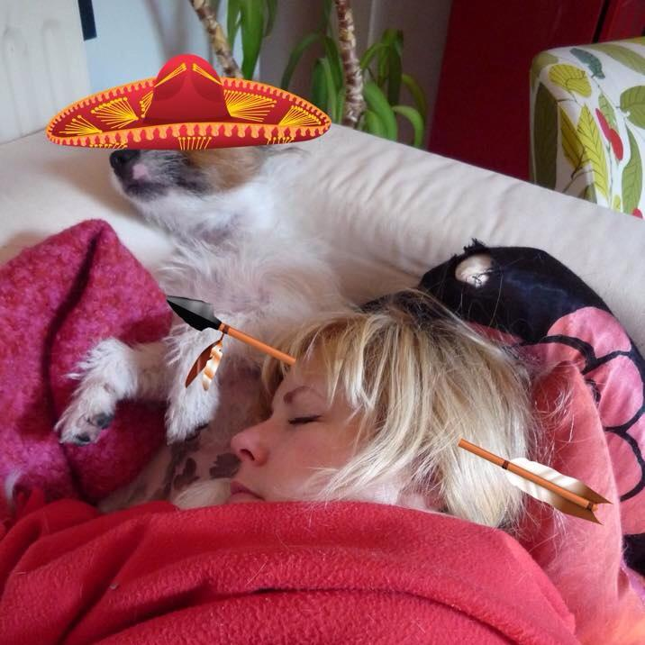

About Me
Born and raised in Richmond, VA, I've always had a love of travel and wanted to see the world. After graduating in theater from Virginia Tech, I moved to Seattle, Los Angeles, and then London while working as a programmer for a market research company creating online surveys. After 15 years of working in tech, I wanted to pursue something completely different. My cousin, a pastry chef, was preparing to open a bakery in her hometown of Raleigh, NC. Being a baker and having trained in bread, I decided to move back to the South and help her.
When not baking (I bake for a Saturday market called "Rebus Works" in Boylan Heights under the bakery name "Ginger"), I'm out seeing bands (I'm a punk gal at heart), hanging with my dog (Evie), reading (I love a good novel), watching movies (from high to low brow), trying the local craft beers (there are too many amazing breweries here!), and exploring North Carolina. Raleigh is a great city and has so much to see! I've been here a little over a year, and I still feel like I've only seen a small percentage of it. If you have any places you think are a must see, please let me know! I'm still trying to find the best BBQ place in NC.
Connect with Me